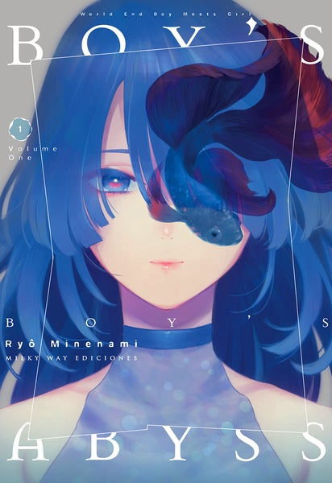

Kakegurui sigue a la famosa academia privada Hyakkaou, basada en un sistema de clases sociales. El consejo estudiantil está en la cima de poder en la escuela, controlada por las apuestas. Los estudiantes millonarios son los que gozan de más beneficios por sus habilidades e inteligencia, sin embargo, el resto sufre problemas debido a su baja clase social y su falta de estrategia. Una nueva estudiante llega a la escuela con una gran obsesión y destreza en los juegos de apuestas. La chica llamada Yumeko está acompañada por Suzui en cada juego y a pesar de perder dinero, incluso con las trampas de los otros oponentes, a Yumeko solo le guía el éxtasis y riesgo de apostar. Genere: Drama, escolar, misteri, suspens psicologic Autor: Homura Kawamoto Dibujante: Tōru Naomura 8.50 € Nagumo Hajime es un ordinario estudiante varón que no tenía ambiciones ni aspiraciones en la vida, y por lo tanto es llamado “incompetente” por sus compañeros de clase. Su clase fue invocada para convertirse en héroes y salvar a un país de la destrucción. Los estudiantes de la clase fueron bendecidos con poderosas características y oficios geniales, sin embargo, no fue el caso de Hajime, con su profesión de “Sinergista”, y sus muy mediocres estados. “Sinergistas, para decirlo en otras palabras era sólo un oficio de artesanía. Siendo el más débil, cayó a las profundidades del abismo cuando él y sus compañeros estaban explorando una mazmorra. ¿Qué encontró en las profundidades del abismo? ¿Podrá sobrevivir? Genere: Acció, Aventura, Comedia, Drama, Fantasia, Isekai, Romance, Magia Autor: Suki Chuuni Dibujante: Roga 8.50 € La protagonista de Murciélago es Kuroko Kômori, una asesina en serie que ha acabado con la vida de 715 personas desde su infancia. Pero no está en prisión, sino que ha llegado a un acuerdo con la policía japonesa para dedicarse a eliminar a los criminales que la fuerza pública nipona no es capaz de enfrentar, en una ciudad en la que la delincuencia y la violencia son la norma. Para conseguir esta nuevo objetivo, que mantiene a Kuroko en libertad, comenza a a trabajar junto a Hinako Tozakura, una chica muy inocente pero que conduce extraordinariamente bien y que resulta ser mucho más audaz de lo que aparenta. Los continuos enfrentamientos con otros asesinos no impiden que Kuroko seduzca e intente acostarse con cualquier mujer que le parezca atractiva y se se cruce en su camino. Genere: Acció, Comedia, Yuri, Seinen Autor: Kana Yoshimura Dibujante: Kana Yoshimura 8,50 €  En una ciudad sin nada, en medio de una vida diaria sin signos de cambio, el estudiante de secundaria Reiji Kurose estaba "solo" viviendo. Familia, sueños para el futuro, amigos de la infancia. Todos ellos le unían a esa ciudad. Pensó que "solo" seguiría viviendo así. Hasta que la conoció. ¿Hay esperanza en la vida? ¿Hay luz que espera por delante? Es el comienzo de una serie de "chico conoce a chica" que refleja el "ahora". 8.50 € Genere: Drama, Psicologico, misteri, romance Autor: Minenami Ryo Dibujante: Minenami Ryo La historia se centra en Riko, una joven huérfana que vive en la ciudad de Orth, en una isla en el mar de Beoluska. La ciudad rodea a un extraño agujero gigante cuyo fondo se dirige a las profundidades de la tierra. Dicho agujero es conocido como el Abismo. Dentro del Abismo se encuentran misteriosos artefactos abandonados y restos de una civilización avanzada que desapareció hace milenios y es por tanto un sitio explorado por excavadores cazarrecompensas denominados Cave Raiders (saqueadores de cavernas), quiénes emprenden descensos arduos y peligrosos para obtener todas las reliquias que puedan encontrar. Además de la monstruosa fauna y flora, los Cave Raiders deben enfrentarse a un gran mal que los afecta cuanto más profundamente desciendan dentro del Abismo, donde una sucesión de capas ejercen una presión que los aflige y enferma progresivamente de manera fatal. Este mal es conocido como la Maldición del Abismo, y son pocos los excavadores que han descendido a las regiones más profundas y regresado para contarlo. El objetivo de Riko es seguir los pasos de su madre y convertirse en una Cave Raider legendaria (quienes son conocidos como Silbatos Blancos) y así resolver los misterios del Abismo. Un día mientras explora las cuevas es atacada por una bestia de la fauna del Abismo, siendo salvada por un robot con la apariencia de un chico humano a quien llama Reg Genere: Aventura, ciencia ficción, drama, fantasía, misterio, psicológico Autor: Akihito Tsukushi Dibujante: Akihito Tsukushi 8,50 €